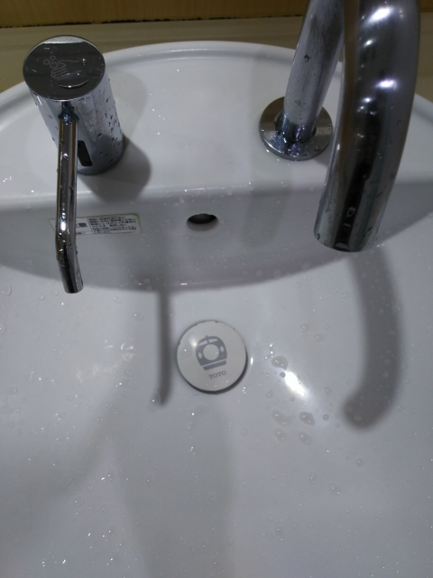
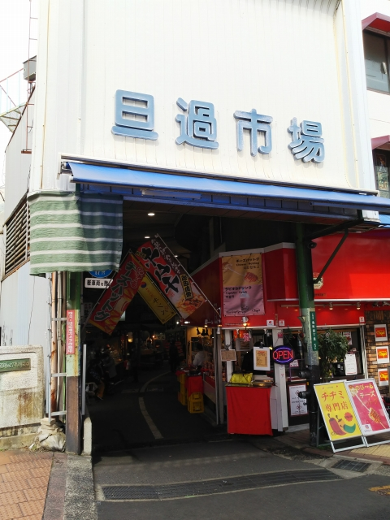

なぁ。

小倉の駅のトイレで発見！さっすがＴＯＴＯの地元
やん。
※そろそろお子様にはわからんようになってきてる
かも
街中を走るモノレール。小倉出身の松本零士にちな
んだラッピング。銀河鉄道９９９かな。
ぶらぶら歩いて小倉の台所、旦過市場へ。
見ての通り、かなりオンボロです。

で、いずこも同じ、建て替えの話が決まったそうで
す。
かなり活気があって、久々に「生きてる市場」を見
た気がします。
鉄子はん、大喜び間違いなし！
かなり賑わってますね。くじら専用店などもあるのは、土地柄かな。
またひとつ、昭和の風景が消えていくんよね・・・
続いて、小倉で非常に気になってた店に。
「福岡人志」で取り上げられた時から、一度食べてみたいと
思ってたんよね～
べつに、ウェイトレスさんがよーさん居る店、というわけや
ないので、福岡の独身男性さん、勘違いしないよーに。
じゃ～ん！肉やきめし！！
めっちゃまずかったです。やきめし好きの私が、残
したぐらいやから・・・
学生の頃、松代でとてつもなくまずいラーメンを残
した以来のまずさかな。
※もちろん、店の人に悪態ついた、とかはないので
ご安心を
そういえば、松本も、食べたあと微妙なコメントし
てたなぁ。多分、内心怒り狂ってたやろな、こんな
まずいもん食わされて。
気を取り直して、関門トンネルをくぐって下関へ。駅前から
ユーザの最寄の「東駅」っちゅーバス停で下車します。
ええユーザです。
しかし、なんでバス停の名前が「駅」なんや？
実はその昔、山陽電気軌道の「東下関駅」の跡地やったんすね。病院も、元は球場やったんや。
後継会社のサンデン交通の本社も、この東駅のあたりにあります。
さらっと仕事を終えて、帰るとします。ファイザー
のワクチンが届く日やったみたいで、お客さんちょ
っとピリピリしてたような。
幡生には、あいかわらず野ざらしで旧型国電が停ま
ってます。
小野田駅で珍しい車両発見！荷電から改造された123
系やがな。
せっかくなので、この珍しい電車に乗り込んでみま
した。
で、雀田駅で乗り換えます。
ここからは、１日２本しかない本山支線が分かれて
ますが、ちょうど乗り継げる！
ここは行くしかないっしょ。
なんとか日暮れまでに終点の長門本山に到着。
相変わらず何もない駅です。
道路をはさんで、もう海です。
前来たのは、まだ旧型国電が走ってた頃なので
３０年は経つなぁ。
ほな新幹線で帰ろっと。